Bevezetés
Köszönetnyilvánítás. A tantárgy a Pécsi Tudományegyetem Természettudományi Kar, a PTE TTK Szentágothai Szakkollégium és a Közgazdaságtudományi Kar Pénzügy és Számviteli Intézet támogatásával jött létre. A tantárgy indításában köszönet illeti meg a Természettudományi Kar oktatási dékánhelyettesét, dr. habil. Trócsányi András egyetemi docenst, dr. Hatvani Zsolt szakkollégium igazgatót, és dr. habil. Pauler Gábor egyetemi docenst, SAP tantárgyfelelőst, valamint Meisl Gábor tanár urat. Szintén köszönet illeti a Közgazdaságtudományi Kar Pénzügy és Számviteli Intézet oktatóit a tantárgy befogadásáért, különösen Balogh Virgínia tanárnőt a szeminárium menedzselésében.
A tantárgy teljesítése. A tantárgy rendszeres, aktív órai részvétellel, órai munkával és a házi feladatok megoldásával, illetve az ezekből származó pontok szerzésével teljesíthető.
Határidők. 2021. február 13-ig mindenkinek csapatot kell választania, és be kell jelentkeznie az SAP rendszerbe.
A tantárgy célja. A szeminárium elsődleges célja az SAP-s felhasználói szintű, gazdasági munkakörök betöltésének megalapozása. Álláspontom szerint a PTE Közgazdaságtudományi Kar képzésein szerezhető magas színvonalú, versenyképes tudásra épített SAP vállalatirányítási rendszer ismerete lehetővé teszi a szakmai gyakorlatok, gyakornoki programok, valamint belépő szintű pozíciók sikeres megpályázását. A minőségi pozíciókra kiírt álláshirdetések gyakran fogalmazzák meg elvárásként az SAP ismereteket. Tekintettel arra, hogy a felsőoktatási versenyben más intézmények ezt felismerték az álláspályázatok során jó eséllyel olyan pályázókkal kell versenyezni, akik ilyen tudással rendelkezhetnek. Annak érdekében, hogy más egyetemeken végzett hallgatókkal szemben eredményesen lehessen fellépni egy-egy pozíció elnyeréséért, kulcsfontosságúnak tartom az elméleti alapozottságú, gyakorlati megközelítésű SAP ismereteket.
Tantárgy szakirodalma. A tantárgyhoz egy elektronikus tananyag fejlesztése zajlik a PTE TTK keretében, dr. Pauler Gábor szakmai felügyeletével. A tananyag jellegzetessége, hogy tartalmát tekintve nem zárt és statikus jellegű, hanem dinamikus ezért az újabb tudáselemek megjelenésével folyamatosan bővül és módosul. Az elektronikus tananyag nem vállalkozik azonban a részletes monográfiák idézésére. Ezért a vállalatirányítási rendszerek, a beszerzési folyamatok és a számviteli ismeretek tekintetében az alábbi könyvek elolvasása javasolt (erőteljesen). Az elektronikus tananyagban elhelyezem, hogy az adott részhez melyik fejezetet szükséges elolvasni. Ezek elolvasása szükséges az órai programhasználat szakmai / tartalmi dimenziójának megértéséhez.
Tarcsi Ádám, Molnár Bálint: Vállalatirányítási rendszerek gazdaságinformatikai megközelítésben (SAP). ELTE Társadalomtudományi Kar, 2011. Elérhető: VÁLLALATIRÁNYÍTÁSI RENDSZEREK GAZDASÁGINFORMATIKAI MEGKÖZELÍTÉSBEN (2021. 02. 04.)
Takács András, Márkus Gábor: Számviteli alapismeretek. PTE Közgazdaságtudományi Kar. Pécs, 2019. Elérhető: SZÁMVITELI ALAPISMERETEK (2021. 02. 04.)
Beszerzési részhez (ajánlott):
- P. K. Agrawal: SAP MM Purchasing: Technical Reference and Learning Guide. PHI Learning Private Limited. Delhi, 2014. 912. p. 13 Euróért elérhető E-bookként. (Ebben a könyvben minden benne van, ami felhasználói és rendszerbeállítás szintjén előfordul a beszerzési modulban, (személyes véleményem szerint ennyi pénzért kiemelt mértékben megéri.) Megvásárolható: SAP MM PURCHASING TECHNICAL REFERENCE (2021. 02. 04.)
Financial Accounting modulhoz (ingyenesen elérhető szakkönyvek):
FICO Team GCL & PETL: SAP-FI-CO User Manual. Greaves Cotton Limited & Premium Energy & Transmissions Limited. Mumbai, 2009.Elérhető: SAP-FI-CO MANUAL (2021. 02. 04.)
Jayachandran KS MBA (Fin), SAP FI: SAP FICO User Guide. Flemingo International Limited. 2010. Elérhető: SAP FICO USER GUIDE (2021. 02. 04.)
ERPROOF FREE TRAINIG (2021. 02. 04.)
Saját tananyag: GitHub
A tantárgy tartalma, kiegészítések. A szeminárium a beszerzési folyamatokra, a szállítói modulra, valamint a főkönyvi lekérdezések alapszintű bemutatására vállalkozik. Emellett érdeklődés esetén közreadhatok bankra, házi pénztárra és tárgyi eszközre vonatkozó magyar nyelvű, SAP tanácsadó irodák által készített anyagokat.
Tantárgy eddigi eredményei. A 2020/21-es tanév őszi szemeszterében megvalósult SAP Financial Accounting képzés segítségével egy hallgató helyezkedett el egy német vállalatcsoport magyarországi vállalatában SAP könyvelő gyakornoki pozícióban.
Miért SAP? Hazánkban az SAP az 1990-es évektől, a német működő tőke beérkezésével jelent meg. Elsőként a nagy autóipari összeszerelők és gyártók, majd azok beszállítóinak megérkezése révén terjedt. A működő tőke közvetett tudástranszfere hatására a hazai, illetve a magyar tulajdonú beszállítók is ezt a rendszert kezdték használni annak érdekében, hogy versenyképességüket emeljék. Az SAP a szolgáltatási szférába és a közszférába is átlépett, tehát gyakorlatilag minden szektort lefedett. Más tekintetben az SAP nem egy dobozos szoftver, hanem olyan platform, amelynek alapfolyamataira vállalatspecifikus megoldások fejleszthetők, és a fejlesztésekben, illetve a folyamatos optimalizálásban, jogszabályi harmonizációban jelentős pénzügyi lehetőségek vannak. A fejlesztéseket közel 20 SAP tanácsadó cég végzi, ezek a cégek gyakran hirdetnek gyakornoki programot, amelyhez alaptudás birtokában érdemes csatlakozni (SAP Hungary Kft.; ERP Consulting Zrt.; itelligence Hungary Kft.; BSIS9 Kft.; Onespire Zrt.; BCS Business Consulting Services Kft.
SAP, vagy ERP tudás. A szeminárium során SAP vállalatirányitási rendszer egyes területeinek használatát lehet alapszinten elsajátítani. A programhasználati ismeretek azonban viszonylag könnyen konvertálhatók más fejlett vállalatirányítási ERP rendszerbe, különösen MS Dynamics Axapta 2012 és Oracle rendszerekbe. Ennek alapja az, hogy az órán tanulandó felhasználói ismeretek standard és szabvány üzleti megoldások, illetve standard üzleti megoldásokon alapulnak. A tranzakciók alapjai 70%-ban azonosak a három rendszerben.
SAP rendszereket használnak az alábbi vállalatok a teljesség igénye nélkül:
ALTEO Nyrt., AUDI HUNGARIA Zrt., AVL Hungary Kft., BAT, ''BALLUFF-ELEKTRONIKA'' Kft. BESSER HUNGARIA Kft., BioCo Magyarország Kft., Bonafarm, BOS Magyarország Bt., Bosch Csoport, Budapest Consultans Kft., Chinoin Zrt. / SANOFI AVENTIS, Continental Automotive Hungary Kft., Dana Hungary Gyártó Kft., DMRV Zrt., ELTER Világítás Kft., Experis, FCA Central and Eastern Europe Kft., FEJÉRVÍZ ZRt., 'FHL BJÖRN HUNGARY'' Kft., FŐTÁV ZRt., Gentherm Hungary Kft., Givaudan Hungary Kft., Grafton Recruitment, Harman Becker Kft., Hauni, Hydro Extrusion Hungary Kft., IMPC Personnel Hungária Kft., ISD DUNAFERR Zrt., Jabil Circuit Magyarország Kft., Jacobs Douwe Egberts HU Zrt., Karrier Hungária Kft., Kayser Automotive Hungária Kft., KNORR-BREMSE Hungária Kft., KPMG Global Services Hungary Kft., KUKA Robotics Hungária Kft., Media Markt Saturn Hold.Magyo.Kft., Mercedes-Benz Manufacturing Hungary Kft., MP Solutions Kft., MTB Magyar Takarékszövetkezeti Bank Zrt., Nitrogénművek Zrt. , Óbudai Egyetem, OTP Bank Nyrt., PAYER INDUSTRIES HUNGARY Kft., Profession Services, Raiffeisen Bank Zrt., Reményi Csomagolástechnika Kft., Richter Gedeon Nyrt., SAMSUNG SDI Magyarország Zrt., Schindler Hungária Kft., SCHMITZ CARGOBULL MAGYARORSZÁG Kft. , Siemens Healthcare Kft., Sofidel Hungary Kft., Tech-Con Hungária Kft., Testo kft., Thermo Fisher , thyssenkrupp Components Technology Hungary Kft., Tiszamenti Regionális Vízművek Zrt., TS Hungaria Kft., UPS Healthcare Hungary Zrt., Villeroy & Boch Magyarország Kft., Vitesco Technologies Hungary Kft., Waberer's International Nyrt., WALLACE & WEBB Kft., Wienerberger Zrt., WIZZ Air Hungary Zrt., ZOLLNER Kft, Zöld-Ker Kft.
SAP rendszert nagy valószínűséggel használó, 500 fő feletti feldolgozóipari nagyvállalatok területi elhelyezkedése és adatbázisa.
A tantárgy megközelítése és feldolgozása. A szeminárium felhasználói megközelítésben dolgozza fel a beszerzési folyamatok és a szállítói modul használatát. Az álláshirdetések és a gyakornoki programok ismerete alapján a beszállítói folyamatok és a szállítói modul jelenti a belépési pontot, tehát feldolgozására került a hangsúly.
SAP verzió és jogosultság. A szeminárium során a Természettudományi Kar fenntartásában és előfizetésében lévő SAP ERP R/3-as IDES (demó) rendszer használatára van lehetőség SAP Super User jogosultság mellett (tehát minden standard felhasználói és rendszerbeállítási művelet elérhető).
SAP oktatás rövid története a PTE TTK-n.
Dr. Pauler Gábor habil. egyetemi docensnek köszönhetően 2009-ben indult a Pollack Mihály Műszaki Főiskolán hallgatói kezdeményezésre, az ELTE SAP Excellence center szakmai segítségével
2011-ben átkerült a TTK-ra, elsőként a Szentágothai Szakkollégium kurzusaként indult
2014 tavaszán indult az ITSH finanszírozásában (4.5MFt) az első SAP szuperkurzus a TTK-n
Az ITSH támogatása megerősítette az SAP oktatás kari pozícióját
2015-ben indult az ITSH finanszírozásában a második SAP szuperkurzus a TTK-n.
2014-től szerepel az SAP a kötelező tantárgyak között (gazdaságinformatikus, programtervező)
2011-2020 között 60 hallgató tudott SAP karrierben elhelyezkedni
2011-2020 között számos SAP rész került szakkollégiumi tantárgyként oktatásra
A PTE TTK SAP oktatói. Az SAP tantárgyfelelőse dr. Pauler Gábor habil. egyetemi docens, aki a logisztikai, beszerzési, gyártási, és raktármenedzsment részt oktatja. Meisl Gábor az SAP programnyelvét az ABAP-ot oktatja, illetve a SECATT folyamat optimalizálást.
A tantárgy keretében szerezhető tudással megpályázható szintek. Tekintettel arra, hogy a tantárgy a beszerzési és szállítói modulok alapszintű használatát mutatja be, egyes esetekben részletesen, elsősorban a belépő szintű felhasználói munkakörökre készít fel. Elhelyezkedés tekintve elsősorban Magyarországon működő feldolgozóipari tőkeerős közép- és nagyvállalatok, valamint a világ más részén működő feldolgozóipari vállalatainak kiszolgálására létrehozott (Shared Service Center) központokban. Valószínűsíthetően a pozíciókban néhány tranzakció napi szintű ellátása lesz a feladat. Az álláshirdetések meghatározó részét ismerve elmondható, hogy a könyvelőirodás munkaköröktől eltérően az all-in-one mindenre kiterjedő tudás helyett, egy-egy feladatcsoportra történő specializálódás figyelhető meg a kezdő pozíciók esetében. Emellett természetesen jelen vannak a komplex munkakörök (szállító, bank, vevő), de ezek inkább a tapasztalattal már rendelkező munkavállalóknak reálisak. A munka mennyisége alapján azonban 1-1 (rész)modul ellátása is elegendő feladatot tartalmaz. Az alábbiakban olvasható néhány felhasználói szintű, specializált SAP-s munkakör. A feldolgozóipari vállalatok esetében lehet tisztán adminisztrációs munkakör és lehet olyan munkakör, amelynek az adminisztráció csak egy részét képezi. A Shared Service Center előnye, hogy viszonylag könnyen be lehet kerülni, és egy multis karriert lehet megalapozni vele.
Néhány feldolgozóipari beszerzési munkakör:
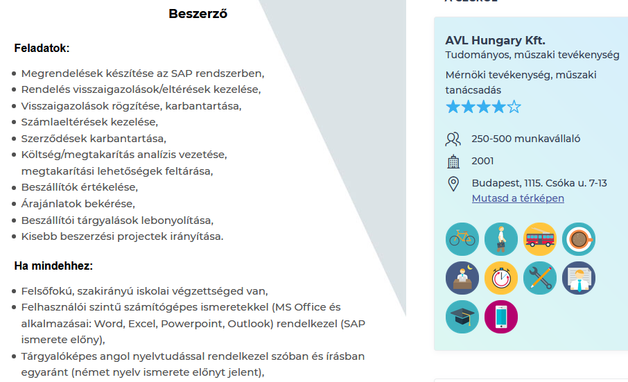
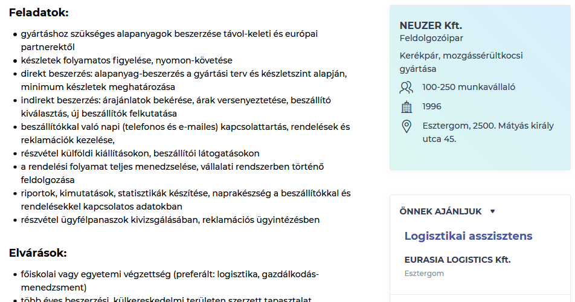
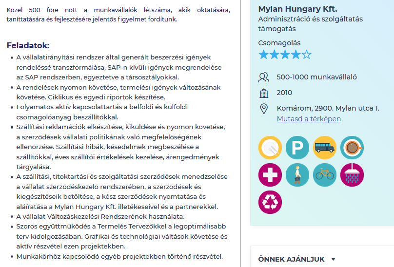
Néhány kiszervezett (Shared Service) munkakörre vonatkozó olyan álláshirdetés, amely a beszerzés és a szállítói modul tartalmát fedi le.
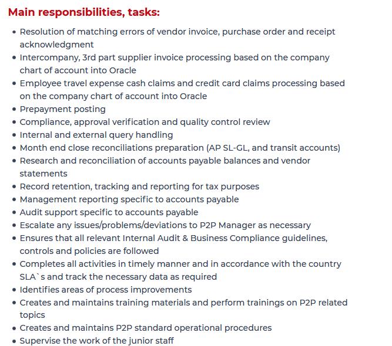
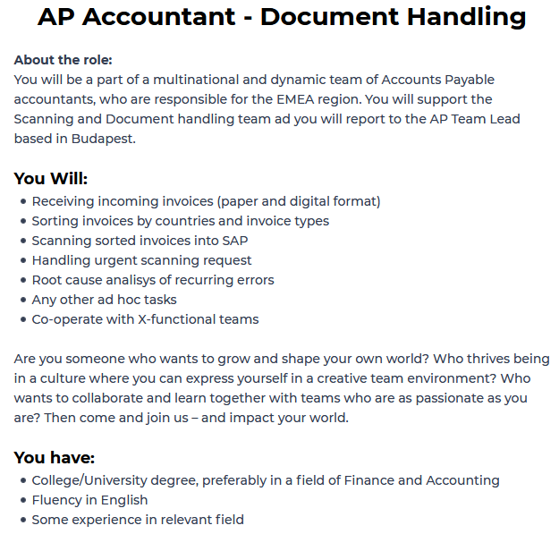
SAP számviteli felépítésének alapjai I.
Az SAP és szinte bármely kettős könyvvitelre alkalmas közép- és nagyvállalati rendszer párhuzamosan használja a szintetikát és az analitikát. Ezen a helyen nem célunk ezek tartalmát részletezni (lásd ezzel kapcsolatban: Takács & Márkus, 2019), kizárólag alapszinten vázoljuk fel a leginkább fontosnak tartott szempontokat.
Az analitika általános ismérvei. A vagyonrészek részletes nyilvántartását részmodulok és segédkönyvek végzik, amelyek kapcsolatban állnak a szintetikus könyvelést végző főkönyvvel. A segédkönyvek a főkönyvbe, illetve a főkönyvi számlákra adnak fel rendszeresen értékeket. Az analitika feladata az egyes vagyonrészek részletes nyilvántartása, segédkönyvek / segédnaplók és segédszámlák használatával. Az analitikus elszámolás mennyiségben, értékben, illetve mennyiségben és értékben történhet. Alapszabály, „hogy az analitikus nyilvántartásnak mindig meg kell egyeznie a szintetikával, tekintettel arra, hogy a könyvelési adatok a szintetikába az analitikából kerülnek be feladások segítésével, kivéve azokat a gazdasági eseményeket, ahol nincsen szükség analitikus nyilvántartásra." (Lukács, 2016, 22. o.) Az analitikus nyilvántartás egyik segédeszköze a leltározás.
Az analitika feladata. Megállapítható, hogy „a számviteli információrendszer legfontosabb inputjai az elsődleges bizonylatok, melyek feldolgozását elsőként az analitikus nyilvántartás végzi el." (Takács & Márkus, 2019, 92. o.) Az analitikához kapcsolódó segédkönyv feladata a bizonylatok érkeztetése, rögzítése és feldolgozása mellett a különböző szempontok szerint összeállított kimutatások előállítása. Lényeges, hogy az analitikát „nem egyetlen homogén rendszerként kell értelmezni, hanem különböző területeket átölelő alrendszerek halmazaként. Az analitika konkrét formájának és szerkezetének kialakítása a gazdálkodó egység hatásköre. A gyakorlati tapasztalatok alapján az analitika legalább a következő alrendszereket foglalja magában." (Takács & Márkus, 2019, 92. o.)
Takács András és Márkus Gábor munkája alapján megállapíthatjuk, hogy az elsődleges bizonylatok, illetve azok feldolgozása alapján az analitikus, részletező nyilvántartás a feladások alapján juttatja az érték szerinti adatokat a főkönyvnek. (Takács & Márkus, 2019, 92. o.)
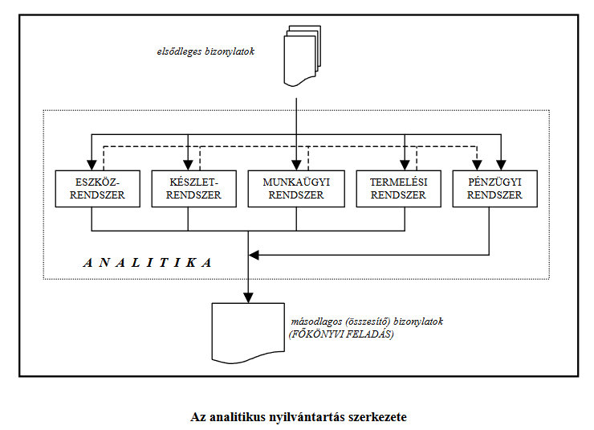
Az alábbiakban a mérlegcsoportok („A" típusú mérlegösszeállítás) szerint haladunk. A bal oldali képernyőfelvétel a vagyonrész mérlegbesorolását, a jobb oldali a vagyonrészhez kapcsolódó analitikus nyilvántartást és segédkönyveket tartalmazó felhasználói modult tartalmazza.
A/I. és A/II. A befektetett eszközök közül az immateriális javak és a tárgyi eszközök könyvelését, adminisztrációját, értékcsökkenésének számítását, stb. a pénzügyi számvitel (Financial Accounting) modul tárgyi eszközök (Fixed Asset) részmodulban tudjuk elvégezni. Az SAP rendszer külön tartja nyilván a befejezetlen beruházás és a befektetett eszközök csoportjait. A befektetett eszközök tekintetében kiemelten lényeges az eszközök azonosító adatainak, bekerülési értékének (a költségek szétosztásának), az aktiválás időpontjának tárolása. Emellett meghatározó jelentőségű az értékcsökkenés számításának és az állományváltozásból adódó értékeknek a felvezetése a főkönyvi számlákra.
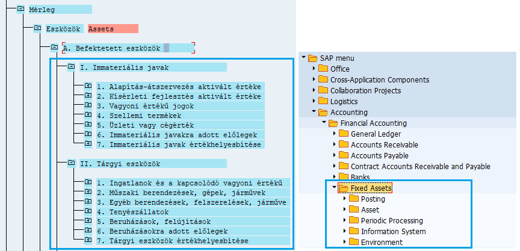
A szeminárium során nem vesszük a tárgyi eszközök modult. A tárgyi eszköz könyvelésével összefüggésben van a beruházás menedzsment modul.

A/II/1. A tárgyi eszköz közül az ingatlanok részletes könyvelését az ingatlankezelő modulok segítik (Real Estate Mgmt.; Flexible Real Estate Mgmt.).
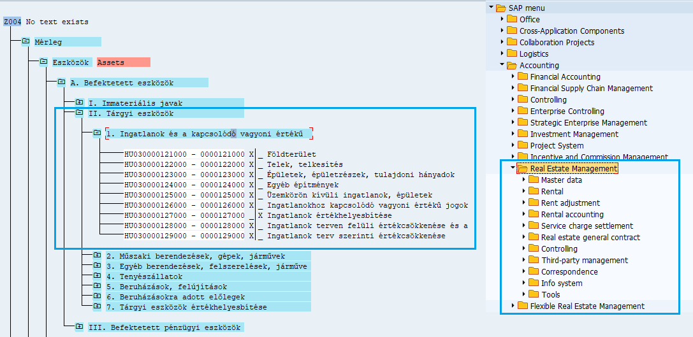
A/III. Befektetett pénzügy eszközöket (és a vállalat teljes pénzügyi rendszerét) a pénzügyi ellátás lánc modul (Financial Supply Chain Management), és annak részmoduljai, köztük a pénzügyi és kockázatkezelő modul (Treasury and Risk Management) támogatja. A modul kiemelten összetett, gyakorlatilag SAP az SAP-ban jellegű. Alapvető feladata a gazdasági szervezet hosszú- és rövid lejáratú követeléseinek és kötelezettségeinek, illetve az e mögött álló üzleti kapcsolatoknak a részletes nyilvántartása, menedzselése.

A befektetett pénzügyi eszközökben és a hosszú lejáratú kötelezettségben szereplő lízing nyilvántartását a lízing könyvelési (Lease Accounting) modul végzi.
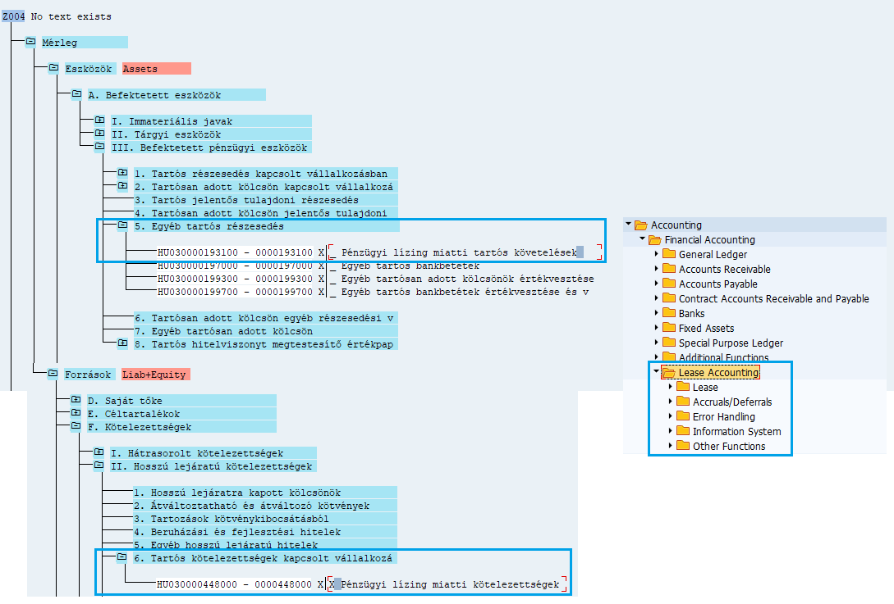
B/2. Forgóeszközökön belüli készleteket, a tárgyi eszközökre, és az 5-ös számlaosztályra is vonatkozó beszerzési folyamatokat az anyaggazdálkodás modul (Materials Management) kezeli. A modulban található Service Master viszont az 5-ös számlaosztály költségnemeire beszerezhető szolgáltatásokat tartalmazza.
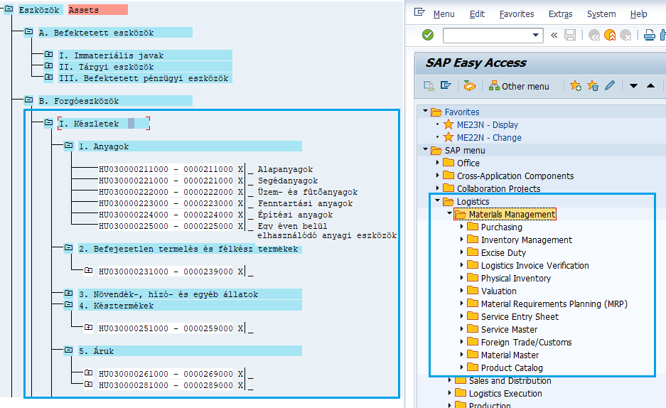
Az analitikus feladatok elvégző modul legfontosabb feladata a vásárolt anyag- és árukészletekről részletező nyilvántartást vezetni. Erről a későbbiekben részletesen írunk.
B/IV. Pénzeszközök mindennapi könyvelési műveleteit a bank modul (Banks) tartalmazza. A modul a pénztár készpénzállományának, valamint a pénzintézeti bankszámlákat kezeli. Különösen lényeges a kimenő és bejövő utalások nyilvántartása, könyvelése, és a bankszámlakivonatok feldolgozása.
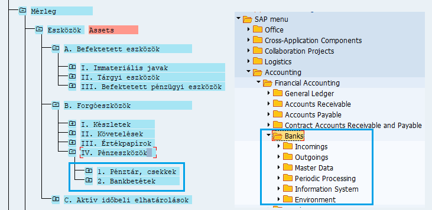
B/II/1. Áruszállításból és szolgáltatásokból származó követelések analitikus nyilvántartását a vevői modulban (Account Receivable) vezetjük.
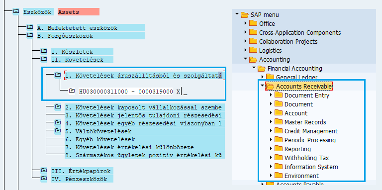
F/III/4. Kötelezettségek \ Rövid lejáratú kötelezettségek \ Kötelezettségek áruszállításból és szolgáltatásból.

5-ös számlaosztályra a dolgozók bérét a bérszámfejtési modullal (Payroll) tudjuk előállítani.
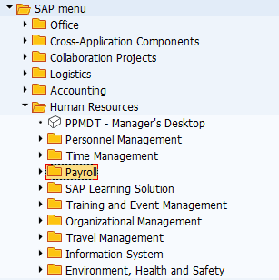
Az analitikus könyvelés fenti alrendszerei a számviteli törvényben rögzített egyedi értékelés elve szerint „minden egyes vagyonelemről egyedi, külön nyilvántartást vezet." Az SAP minden egyes vagyonelemről létrehoz egy nyilvántartólapot, amelyen a jogszabályokban meghatározott adatkörök szerepelnek, „az egyedi értékelés elve bizonyos esetekben sajtosan érvényesül, hiszen néhány speciális esetben (például készleteknél, tárgyi eszközöknél, vagy értékpapíroknál, ahol nagy mennyiségű, de teljesen azonos paraméterekkel rendelkező eszközről van szó) a csoportos nyilvántartás is megfelel az egyedi értékelés elvének." (Takács & Márkus, 2019, 94. o.)
Szintetikus könyvelés. A segédkönyvekből és modulokból történő feladások alapján „a gazdasági események hatásai a szintetikus nyilvántartásban (szintetikában) is rögzítésre kerülnek. A szintetikus nyilvántartás gyakorlatilag a kettős könyvvitel szabályai szerinti könyvelést jelenti … A beszámoló összeállításának elsődleges információforrását a szintetika képezi, hiszen a legfontosabb kimutatások (a mérleg és az eredménykimutatás) a naprakész kettős könyvvitel információiból állíthatók össze. Ugyanakkor a beszámoló bizonyos részeinek (különösen a szöveges, tájékoztató jellegű részek) összeállításához nélkülözhetetlenek az analitikából származó eredeti adatok." (Takács & Márkus, 2019, 91-92. o.) Fogalmi meghatározás szintjén megállapítható, hogy a „szintetika, azaz a főkönyvi nyilvántartás a kettős könyvviteli szabályok szerinti könyvelést, valamint az ehhez kapcsolódó összesítő-ellenőrző feladatokat foglalja magában. A szintetika szintjén minden növekedés és csökkenés pénzértéken kerül kimutatásra. Legfőbb feladata, hogy beszámolóban szereplő kimutatások összeállításához közvetlenül felhasználható információkat állítson elő. A szintetikus nyilvántartás csak akkor lehet korrekt, ha a háttérben pontos és naprakész analitikus adatok állnak rendelkezésre." (Takács & Márkus, 2019, 96. o.) Forrását tekintve megállapítható, hogy A zárlati teendők után a szintetika és az analitika együttesen már képes a beszámoló elkészítéséhez igényelt valamennyi információt szolgáltatni. Adatforrását tekintve megállapítható, hogy a „szintetika információbázisát … az analitikából érkező feladások képezik. A feladások alapján a gazdasági események folyamatosan rögzítésre kerülnek, számlasoros és idősoros könyvelés formájában is. Az évközi könyvelést az üzleti év végén a könyvviteli zárlat teszi teljessé. A könyvviteli zárlat magában foglalja különböző év végi rendező/pontosító tételek elszámolását, összesítő kimutatások elkészítését, valamint a technikai zárást. A zárlati teendők után a szintetika és az analitika együttesen már képes a beszámoló elkészítéséhez igényelt valamennyi információt szolgáltatni.
SAP rendszerben a szintetikus könyvelés részeként főkönyvi számlák között értékeket a főkönyvi modulban tudunk mozgatni, illetve szintén a főkönyvi modulban tudunk kimutatásokat készíteni.
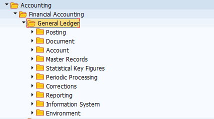
SAP használat alapjai
A PTE Természettudományi Kar, illetve a szeminárium keretében elérhető SAP ERP R/3-as rendszerben az alábbi modulok, illetve az azokhoz kapcsolódó tranzakciók érhetők el Super User megközelítésben, tehát teljes funkcionalitásukban (felhasználói és rendszerbeállítási szinten).
Figure 1: https://www.hipfunggroup.com/sap-erp-system/ (2021. 02.10.)
Ezekből a modulokból a Materials Management, a Financial Accounting és a Controlling modulok részmoduljaiba tartozó tranzakciókat fogjuk használni.
Az egyes modulokba tartozó tranzakciók, intéző nézetben elérhető mappákban (Folder) vannak tárolva.

Felmerülhet a kérdés, hogy az adott specializált SAP-s munkakörök milyen összefüggésben vannak az elérhető mappákkal és tranzakciókkal. A kérdéssel kapcsolatban megállapítható, hogy a munkakörök és az azokban lévő feladatok nagy mértékben meghatározzák az intéző menüpont tartalmi felépítését. Ezt az Other menu kapcsolóval, illetve szerepek megadásával lehet szemléltetni.
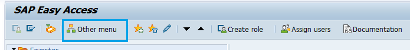
AIS_APAY_CLERK_US00 Szállítói számla könyvelő
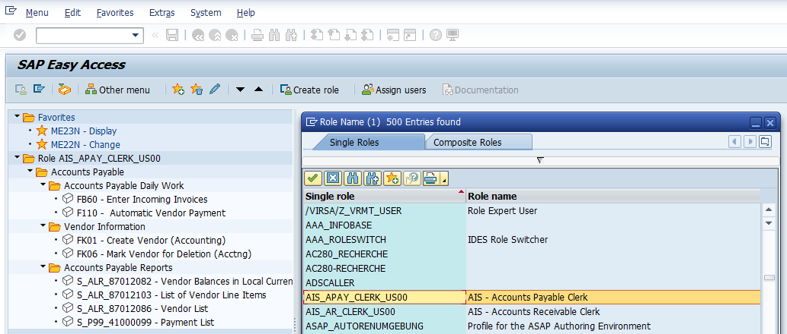
Role VS:: AIS_AR_CLERK_US00 Vevői számla könyvelő
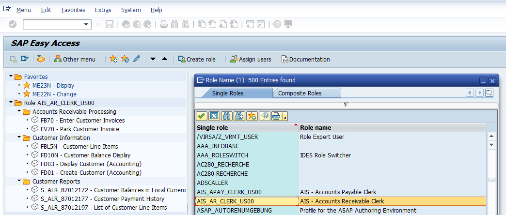
Role VS::FI_AA_ASSET_TRANSACTIONS Tárgyi eszköz könyvelő
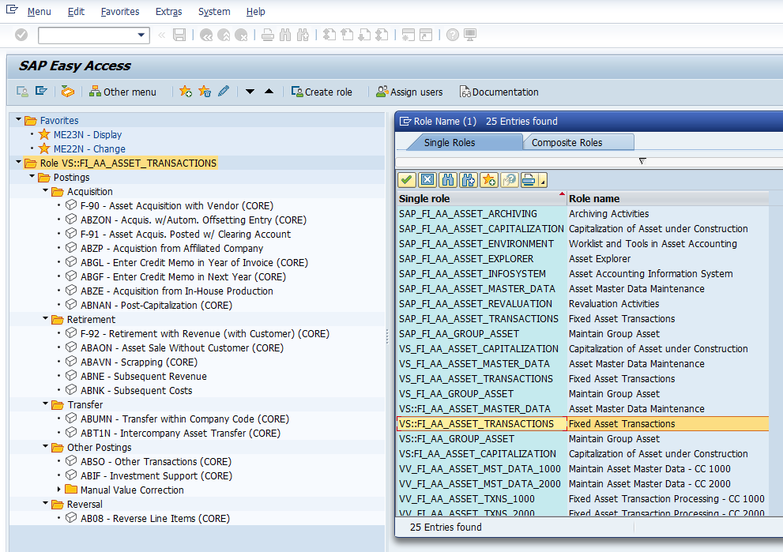
Ezek és az ezekhez hasonló szerepek jogosultságokban tárgyiasulnak. Adott felhasználók jogosultságcsoporthoz tartoznak, és kizárólag a munkakörök szempontjából releváns mappákat láthatják, illetve a feladataikhoz szükséges tranzakciókat használhatják.
Intézőnézet felépítése:
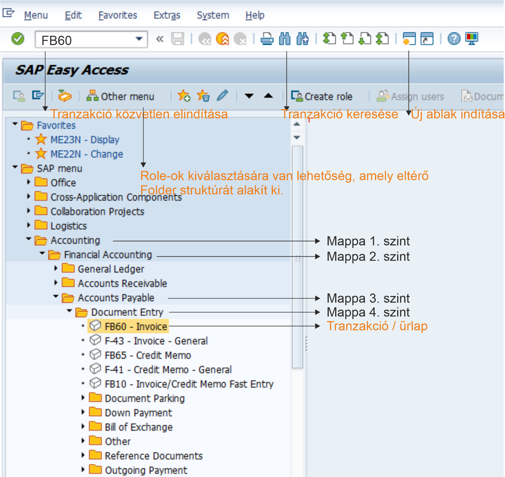
Az intézőből tranzakciók érhetőek el. A tranzakciók mezőkből felépített űrlapokat tartalmaznak. Az egyes mezők és azok értékei pedig adattáblákban helyezkednek el. A tranzakciók jellegük és tartalmuk alapján különböző típusba sorolhatók. Az alábbiakban a törzsadatokra és a folyamatokra vonatkozó tranzakciók között teszünk különbséget.
Törzsadatok (Master Data): SAP rendszerben (és más vállalatirányítási rendszerekben) a törzsadatok jellemzően az üzleti folyamatok konstans, nagyrészt állandó jellegű objektumaihoz kapcsolódnak. A törzsadatok értékei általában hosszú időtávra vonatkoznak, és összességükben ritkán változnak. Informatikai értelemben egy-egy objektumosztályba sorolható objektum tulajdonságait írják le. Jellemző törzsek lehetnek a szállítók, vevők, üzleti partnerek, bankfiókok, készletbe tartozó anyagok, áruk, a befektetett eszközök közé sorolható immateriális javak, tárgyi eszközök, befektetett pénzügyi eszközök. A törzsadatokkal az alábbi műveletekre van lehetőség: egyedi felvitel, egyedi megtekintés, egyedi módosítás, módosítások egyedi és tömeges megtekintése, táblázatszerű tömeges megtekintés és módosítás, listaszerű riportok. Ezeket a funkciókat az alábbi táblázat tartalmazza rendszerezetten:
Figure 2: Saját szerkesztés (Lendvai Tamás)
Amint a szöveges részben is írtuk, illetve a 2-es számú táblázatból is látható, az egyes törzsadatokra vonatkozó tranzakciók sematikusak, sablonosak abban a tekintetben, hogy a létrehozás (Create), a módosítás (Change), a megtekintés (Display), a változások egyedi megtekintése (Display Changes), tömeges megtekintés és karbantartás (Mass Maintance) és a listariportok (List Ereport) valamennyiükre vonatkoznak.
Folyamatadatok (Process Transaction):
Kidolgozás alatt
A félvés első részében a fenti táblázatban szereplő törzsadatokra vonatkozó alapműveletek alapszintű használatát fogjuk elsajátítani.
Kezdő feladat:

Az első feladatunkban fel kell vinni (FI02), meg kell tekinteni (FI03, S_P00_07000008), és riportálni kell bankfiókadatokat. Bankfiókadatokra a szállítók, vevők, és az üzleti partnerek törzsadataiban lesz szükség. Bankfiókadatok nélkül nem tudunk rögzíteni bankszámlaszámot.
1. Lépés: Other menu \ SAP_FI_BL_BANK_MASTER_DATA (másoljuk ki) Maintaining Bank Master Data
Az 1. lépés megtétele opcionális, és ki lehet keresni a tranzakciókat a szokásos elérés alapján is. A role kiválasztását azért tartjuk lényegesnek, mert így látni lehet, hogy adott SAP-s munkakörök milyen jellemző feladatokat tartalmaznak, illetve világossá válik a szerepek és az intéző nézet közötti összefüggés.
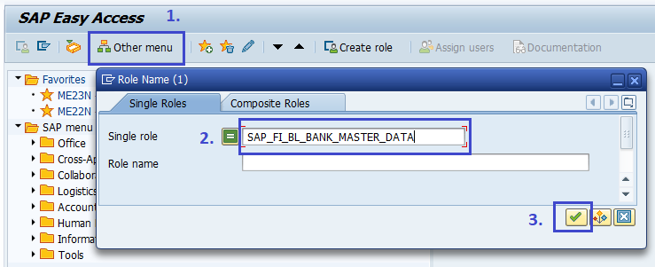
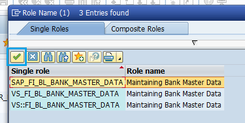
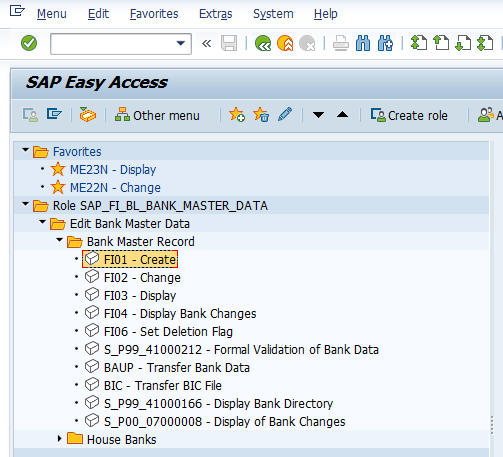
A szerep kiválasztásának hatására az intézőben kizárólag a bankfiók törzsadataival összefüggésben lévő műveletek találjuk meg.
2. Lépés: Hozzunk létre egy új bankfiók törzsadatot (FI01)
Amennyiben nem a szerepek kiválasztásával kívánjuk limitálni a listát, úgy a banki törzsekre vonatkozó tranzakciók elérhetők az alábbi úton is.
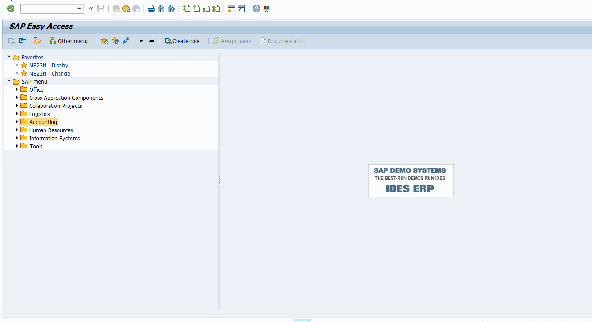
Az elérhető tranzakciók közül az alábbiak használatát tekintjük át.
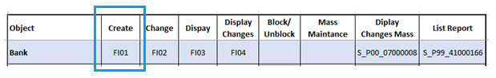
A törzsadatok feltöltéséhez nyissuk meg az alábbi táblázatot:
A feladat a következő. Mindenki talál a neve mellett olyan banki adatokat, amelyek nem szerepelnek még az SAP adatbázisban. Nyissuk meg az FI01-es tranzakciót, és elsőként adjuk meg az országot HU, majd az A oszlopban található 8 számból álló bankfiók kódot (Branch office code) Bank Key-ként, majd enter.
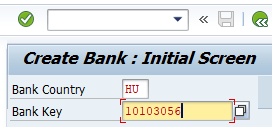
Ezt követően értelemszerűen töltsük ki az űrlapot.
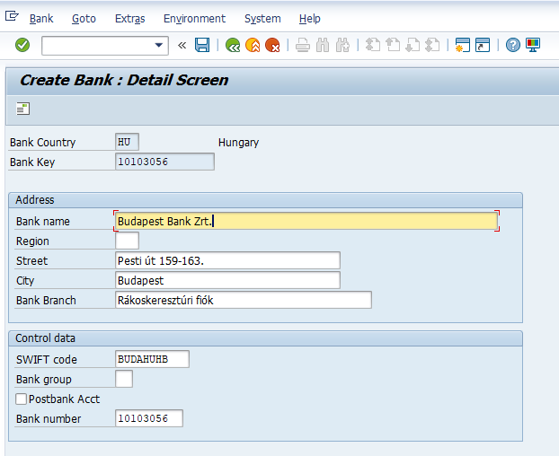
Ezt követően kattintsunk a lemez ikonra és mentsük el. Fogunk kapni egy értesítés a bal alsó sarokban, hogy sikerült a mentés.
FI02 - Módosítás
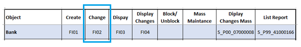

FI03 – Megtekintés (Display)
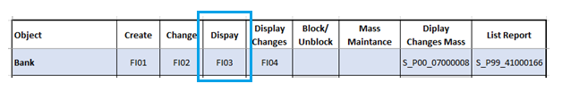

FI04 Változások egyedi megtekintése (Display Changes)
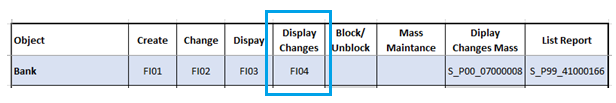
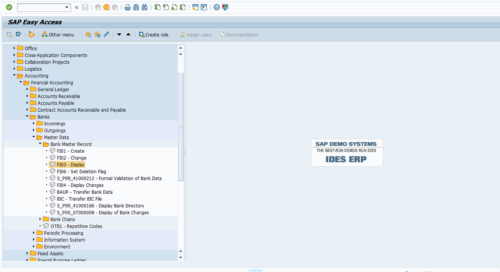
S_P00_07000008 – Változások tömeges megtekintése (Display of Bank Changes)
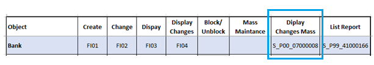
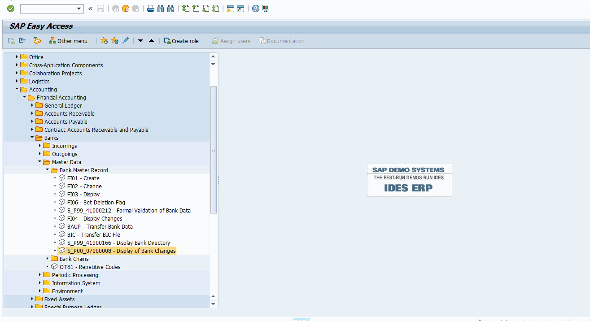
S_P99_41000166 – Bankok listaszerű lekérdezése (Display Bank Directory)
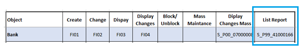